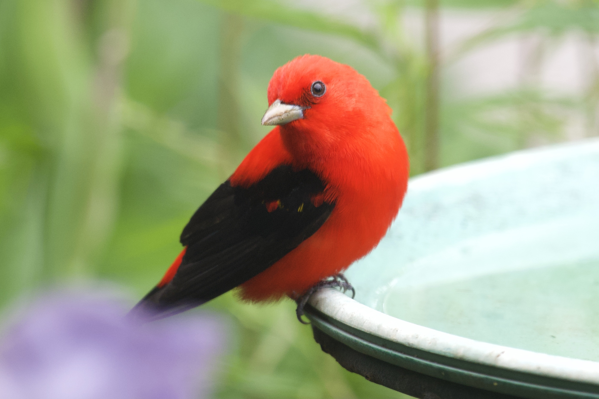
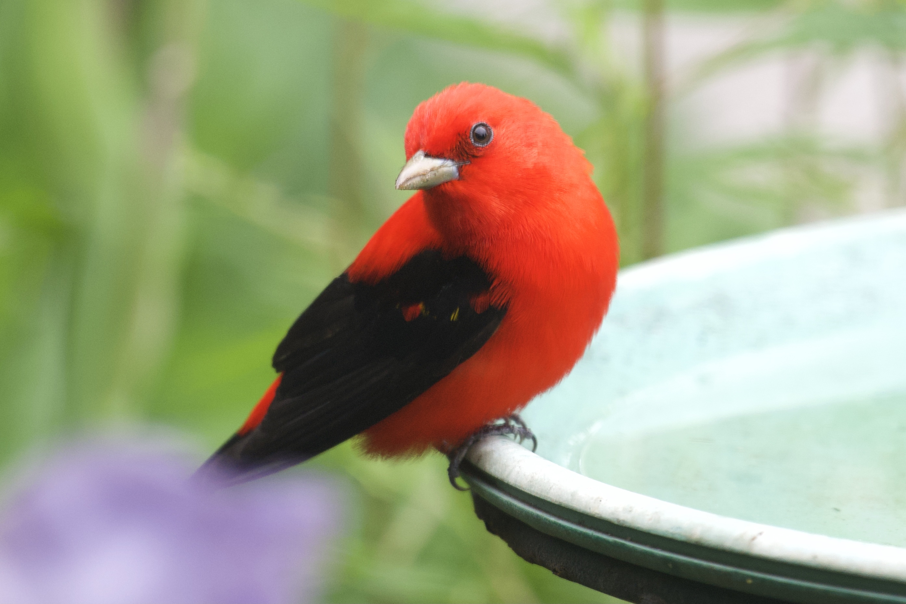
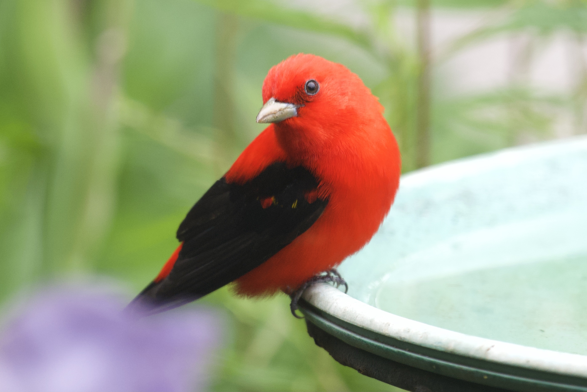

I grew up in Phoenix, Arizona. I was always curious about nature
and loved the outdoors. Growing up in the middle of the city there
wasn’t a lot of nature around. Even so, I craved it. I wanted to
explore the mountains in the distance. I wanted to have my feet
in the dirt and to feel the sun on my skin. As soon as I got my
drivers license I drove out to the desert for long hikes and the
solitude of nature. I’d take my dog Sedona and we’d be gone for hours.
This time outdoors led to me falling in love with birds.
I was curious about the quail, doves, and the cactus wrens.
I wasn’t passionate about the muted birds that were well camouflaged
in the desert, mostly I just loved the smell of dry arroyos and
petrichor, the way the smooth rocks in the shade would remain cool
even if it was 100 degrees, and the quite trails dotted with
occasional sounds of mourning doves. (can I insert a sound?)
Phoenix, Arizona (near Papago Peak)
St. Louis, Missouri
Years later, I would move to St. Louis, Missouri and fully discover
my love for birds. I installed a bird feeder in our front yard outside
our kitchen window. The birds that came to the feeder were red and
bright yellow, iridescent black, and more. On my many hikes near
St. Louis I saw birds that were bright blue, yellow, and red.
These birds seemed flashy and colorful, unlike the birds in the
Sonora Desert. I bought a book about birds in the area and
started to learn the visiting birds and their behaviors.
Daily I’d have around 20 species of birds visiting my feeders
and yard. Grackles, crows, northern cardinals, chickadee, tufted
titmouse, starlings, Eurasian tree sparrows, house sparrows,
American gold finch, house finch, northern flickers, blue jays,
American robin, hairy, downy, and red belly woodpeckers and more.
Seeing this variety in just my front yard made want to learn more.
The more I learned the more birds showed up in my writing, the more
I wanted to photograph them, and the more I wanted to find as many
species as I could!

Rockwoods Reservation (near St. Louis)
It was the eastern bluebird that really captured my curious heart.
One day, on a hike at Rockwoods Reservation, I saw a small flock of
eastern bluebirds. They are small, shy birds and every time I got close
enough to snap a photo they would fly further up the trail. I felt like
these small birds were leading me through the forest. The flash of blue
in a far tree became a little magical! It was exciting to try and capture
them with my camera.
Confluence of the Mighty Missouri and Mississippi
St. Louis happens to be a big area for birding. The Mississippi
and Missouri Rivers make it a flyway for birds. There are four main
flyways (paths of migration) in the United States and St. Louis is
right in the middle of the Mississippi Flyway. Because of this there
are a lot of places along the rivers to go bird and to see a lot of
interesting species. One of my favorite places to go is Riverlands
Migratory Bird Sanctuary. This area is on the confluence of the
Mississippi and Missouri Rivers and because of that it attracts many
migrating birds especially a wide variety of ducks, geese, pelicans
and many species of gulls. There is a lot of space for large flocks
of birds to rest. One cool autumn morning, I went out to Riverlands
just before sunrise and waited for the sun to come up over the
horizon. As I the sun rose the sounds of the birds became louder
and more frenetic. Even though I couldn’t see them, I could hear
the enchanting cacophony of their waking.
Missouri River
Tower Grove Park (St. Louis, MO)
One of my dear friends — that I love to hike with — has encyclopedic
knowledge about birds and nature. We started birding together about
13 years ago. One of our favorite places to go is the Gaddy Bird
Garden at Tower Grove Park. This area is called an Important Bird
Area (IBA), which means it is globally important for the conservation
of birds. It is also part of the Great Missouri Birding Trail.
This area is incredibly important because it is a rest-stop for
migrating birds. Some of those birds migrate from South America
to the far reaches of Canada and back again. It’s very exciting to
see these rare birds because they are just here for a very short
time (maybe a few weeks or a few months) as they make their way to
their breeding grounds. My friend and I head to the Gaddy Bird Garden
every migration season (late spring and early fall) to find as
many of these rare birds as we can.
Wakodahatchee Wetlands & Green Cay Wetlands, Florida
Several years ago I took a trip to Florida with my birding/hiking
friend. We were only there for a long weekend, but we made a point to go
birding at a couple of very cool birding sites. One of them is Wakodahatchee
Wetlands and the other is Green Cay Wetlands. Both of these are amazing
places to see a huge variety of birds. These wetlands are home to many
rookeries (bird nursery) and they are both man made areas that have been
turned into sanctuaries for birds. More than 170 species of birds have been
identified here, including the purple gallinule, green herons, yellow-rumped
warblers, bald eagles, a variety of hawks and flocks of shore birds, to
name just a few. My favorite find at Wakodahatchee was an American Bittern.
This bird hunts for fish and small crustaceans along the edges of marshy
reeds. They blend in so well and move just like the reeds in the wind that
they are very hard to find.
Seattle, Washington
I have friend who lives near Seattle. I used to visit her a couple times a year. When I do, I love to go birding and see what I can find. Because it is a different region the birds are different than in St. Louis. In St. Louis we have blue jays and in Seattle they have Stellar’s jays. In St. Louis we have Northern Cardinals, their range doesn’t go as far east as Washington state. Both St. Louis and Seattle have Northern Flickers, but St. Louis has the yellow-shafted variety and Washington has the red-shafted variety. It’s very exciting to see the wide variety of birds and the differences in various regions. Every time I go to Washington I make time to go look for my feathered friends.
SEATTLE
Columbia 2025
In winter of 2025 I am going to Columbia to go birding. This will be the trip of a lifetime because I will see many birds that I can’t see anywhere else. These are called endemic species. Columbia has 1,878 species of birds, and of those 83 are endemic! It’s very exciting to be able to see that many different birds in one place. The United States only has 800 species and that includes migration. Missouri only boasts 390 bird species. I am especially excited to try and see the multicolored tanager and the toucan barbet. Additionally, the Columbia trip will be a beautiful and culturally rich experience.
Last thoughts on birds
Birds have become an important part of my life. I love nature and birding allows me a close connection to nature. Birds have made their way into my art, photography, poetry, and other writing. Birds help me feel connected to this planet and grounded. There are approximately 10,000 bird species in the world and I’ve only seen a small fragment. I can’t wait to see where my birding adventures take me over the next few decades.
Check out these cool websites about birds:
BirdCast - This website provides real-time bird migration forecasts to help birdwatchers plan their outings.

 



.jpg)